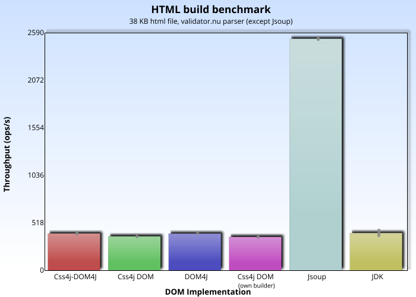
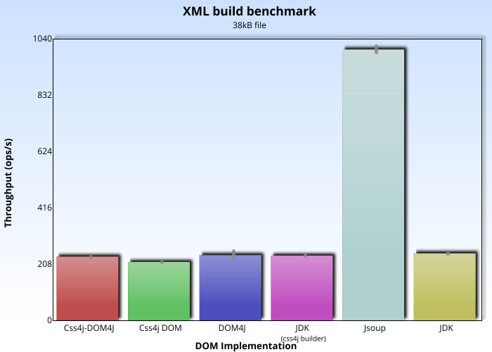
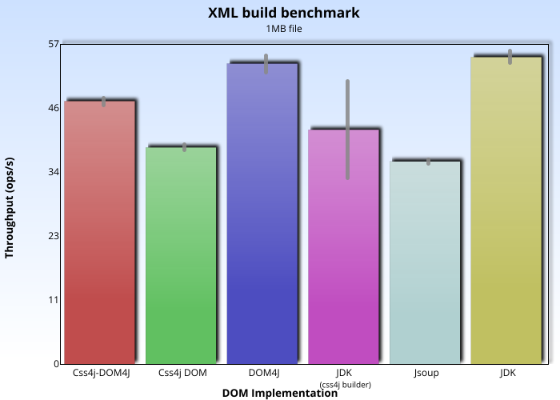

DOM benchmarks
Overview
The DOM benchmarks measure how fast different DOM implementations are when building and traversing documents:
- Css4j-DOM4J module (which subclasses DOM4J).
- Css4j's native DOM.
- Stand-alone DOM4J.
- JDK's bundled DOM implementation.
The following software versions were used:
- Java: AdoptOpenJDK* 15.
- JMH: 1.26.
- css4j: 3.2 (pre-release).
- validator.nu htmlparser: 1.4.16.
- dom4j: 2.1.3.
The computer has an Intel® Core™ i5-1035G7 CPU and 8GB of RAM.
(*) Note: one of the tested DOM implementations is the one that comes bundled with the JDK (identified as "JDK" in the graphics), and it has been observed that the version shipped with the Oracle JDK may be faster.
Build HTML documents
Measures the speed at which the validator.nu HTML parser can build a small document (38 KB HTML) into a few DOM implementations.
Numeric results (higher is better):
| Implementation | Score | Error | Unit |
|---|---|---|---|
| Css4j-DOM4J | 335,609 | ±9,416 | ops/s |
| Css4j DOM | 328,637 | ±1,920 | ops/s |
| JDK | 333,742 | ±3,079 | ops/s |
If one looks at the error figures, the three implementations are somewhat even in this test. Plain DOM4J is not included in the benchmark,
as it cannot be used with HtmlDocumentBuilder.
Build small XML documents
The SAX parser that comes bundled with the JDK is used to parse and build a document from a small XHTML file (38 KB).
Numeric results (higher is better):
| Implementation | Score | Error | Unit |
|---|---|---|---|
| Css4j-DOM4J | 505,418 | ±20,569 | ops/s |
| Css4j DOM | 486,341 | ±5,949 | ops/s |
| DOM4J | 547,620 | ±12,901 | ops/s |
| JDK (XMLDocumentBuilder) | 530,703 | ±7,089 | ops/s |
| JDK | 542,871 | ±12,360 | ops/s |
Build XML documents
The SAX parser that comes bundled with the JDK is used to parse and build a document (1MB file).
Numeric results (higher is better):
| Implementation | Score | Error | Unit |
|---|---|---|---|
| Css4j-DOM4J | 90,796 | ±1,193 | ops/s |
| Css4j DOM | 85,990 | ±0,764 | ops/s |
| DOM4J | 113,444 | ±0,504 | ops/s |
| JDK (XMLDocumentBuilder) | 91,828 | ±1,119 | ops/s |
| JDK | 120,095 | ±0,846 | ops/s |
DOM traversal: getFirstChild()/getNextSibling()
Count the nodes of an XML document, using a combination of getFirstChild()/getNextSibling() to traverse it.
Numeric results (higher is better):
| Implementation | Score | Error | Unit |
|---|---|---|---|
| Css4j-DOM4J | 238,888 | ±14,212 | ops/s |
| Css4j DOM | 3098,809 | ±48,866 | ops/s |
| JDK | 6193,611 | ±44,107 | ops/s |
Note: for unknown reasons, the usual procedure to build the JDK document with a DocumentBuilderFactory could not be used to initialize the document
traversed in the benchmark, as that document is somehow left in an inconsistent state with no child nodes; this happened with the initialization code being executed in a
Scope.Benchmark class and also when in a static initialization block. When that same code is executed in a JUnit test, the problem is not seen.
Because of this reason the JDK DOM document was built with css4j's XMLDocumentBuilder,
although that process is not part of the timed benchmark.
DOM traversal: getLastChild()/getPreviousSibling()
Count the nodes of an XML document, using a combination of getLastChild()/getPreviousSibling() to traverse it.
Numeric results (higher is better):
| Implementation | Score | Error | Unit |
|---|---|---|---|
| Css4j-DOM4J | 208,244 | ±48,552 | ops/s |
| Css4j DOM | 2951,919 | ±241,858 | ops/s |
| JDK | 6717,898 | ±92,711 | ops/s |
The Css4j-DOM4J results are representative for DOM4J as well.
DOM traversal: NodeIterator
Count the elements of an XML document traversed by a NodeIterator.
Numeric results (higher is better):
| Implementation | Score | Error | Unit |
|---|---|---|---|
| Css4j DOM | 2241,289 | ±47,954 | ops/s |
| JDK | 4564,023 | ±123,393 | ops/s |
DOM4J is not included as it lacks a NodeIterator.
Note: sometimes the NodeIterator created by the JDK is in an inconsistent state, and fails with an exception like:
# Warmup Iteration 1:java.lang.ArrayIndexOutOfBoundsException: Index 34 out of bounds for length 33 at java.base/java.util.ArrayList.add(ArrayList.java:455) at java.base/java.util.ArrayList.add(ArrayList.java:467) at java.xml/com.sun.org.apache.xerces.internal.dom.DocumentImpl.createNodeIterator(DocumentImpl.java:255) at io.sf.carte.doc.style.css.mark.DOMTraverseMark.markNodeIteratorJdk(DOMTraverseMark.java:122)
But I have observed this only while benchmarking, and not in other cases.
DOM traversal: TreeWalker
Count the elements of an XML document traversed by a TreeWalker.
Numeric results (higher is better):
| Implementation | Score | Error | Unit |
|---|---|---|---|
| Css4j DOM | 2229,978 | ±44,438 | ops/s |
| JDK | 4662,251 | ±95,975 | ops/s |
DOM4J provides no TreeWalker.
DOM traversal: elementIterator()
Traverse an XML document using native DOM's elementIterator()
and DOM4J's elementIterator().
Numeric results (higher is better):
| Implementation | Score | Error | Unit |
|---|---|---|---|
| Css4j DOM | 1973,655 | ±13,820 | ops/s |
| DOM4J | 522,078 | ±8,523 | ops/s |
The JDK's DOM provides no element iterator.
DOM traversal: getElementsByTagName()
Traverse the list given by getElementsByTagName(). In the case of css4j's native DOM, there are two results: one iterating the
NodeList by the item() method, and another via the iterator
(the returned NodeList implements Iterable).
Numeric results (higher is better):
| Implementation | Score | Error | Unit |
|---|---|---|---|
| Css4j-DOM4J | 463,847 | ±3,358 | ops/s |
| Css4j DOM | 2,153 | ±0,087 | ops/s |
| Css4j DOM (iterator) | 1532,235 | ±59,400 | ops/s |
| JDK | 2002,057 | ±82,689 | ops/s |
Note: the iterator is documented as the recommended way to traverse the ElementList in css4j since version 3.2. Css4j versions prior to 3.2 perform much better in this benchmark,
but the implementation was switched to one that is more lightweight (and the iterator performance is good enough).
DOM modification: appendChild()/removeChild()
Modify the nodes of an XML document by appending elements with appendChild() and later removing them with
removeChild().
Numeric results (higher is better):
| Implementation | Score | Error | Unit |
|---|---|---|---|
| Css4j-DOM4J | 115,780 | ±1,609 | ops/s |
| Css4j DOM | 440,383 | ±6,933 | ops/s |
| JDK | 791,273 | ±8,898 | ops/s |
Analysis
Building a document with DOM4J (both plain DOM4J and the CSS-enabled subclasses that CSS4J provide) is fast, but has an important scalability problem. If you use
instances of DOM4J simultaneously in the same JVM, contention happens even if no common resources are explicitly accessed. This is due to DOM4J using a static synchronized cache of QName objects,
as shown by the benchmark profiler (e.g. java -jar build/benchmarks.jar XMLBuildBenchmark -prof stack:lines=5;top=3;detailLine=true;period=1):
Secondary result "io.sf.carte.doc.style.css.mark.XMLBuildBenchmark.markBuildDOM4J: stack":
Stack profiler:
....[Thread state distributions]....................................................................
72,3% BLOCKED
27,6% RUNNABLE
....[Thread state: BLOCKED].........................................................................
72,3% 100,0% java.util.Collections$SynchronizedMap.get
org.dom4j.tree.QNameCache.get
org.dom4j.DocumentFactory.createQName
org.dom4j.tree.NamespaceStack.createQName
org.dom4j.tree.NamespaceStack.pushQName
So its usage is not recommended for multi-core systems.
Css4j's native DOM has more features than the other contenders but is slower than the JDK's DOM, otherwise shows reasonable speeds. The DOM implementation that comes bundled with the JDK is the fastest, and looks like a good choice for applications that do not require handling styles (or you could use the read-only DOM wrapper with it, if that fits your needs). Finally, DOM4J is lagging behind in performance for anything other than document build-up.